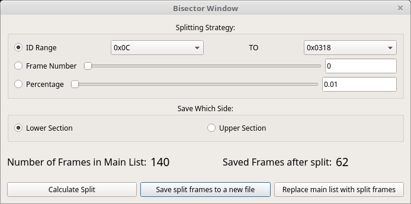

43. Bisector Window
.
44. Using the Bisector Window
The purpose of this window is obviously to split the list of frames into two pieces. You have many options for how to do this. You can split by:
ID Range - Grab a set of frames between two values. Note that you cannot pick and choose frame IDs here but rather just use a list. If you want to pick and choose then use the filter interface on the main form and then save the filtered list from the File menu.
Frame Number - You can split right at a given frame number. All frames up to that number will be on one side with all the rest on the other.
Percentage - Pretty much just like the Frame Number option but in percentage instead in case that is more convenient.
In all cases, you have the option of which side of the split you want to save. Click “Calculate Split” to process the split. You will see above the buttons a reference of how many frames there were in total and how many you would be saving after the split. From here you should be able to do one of two things:
“Save split frames to a new file” - Save the new list of frames (after the split) to a file. You can save to any file format that SavvyCAN supports elsewhere.
“Replace main list with split frames” - Were this to work it would replace the frames loaded in the rest of the application with the split list. I’m sure this would be a really nice thing to be able to do. Well, you can’t right now. It’s not implemented yet. So, just imagine you can do this. In the mean time you can save to a file then load that file. Sorry…